FAMILY TRIP
Hit the beach
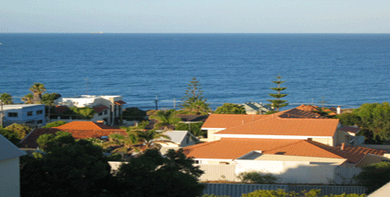
Where: North Beach
It’s not hard to find a quiet beach in Australia, even in our bustling cities. Stretching across Perth’s coastline are many sugar-white sand beaches, perfect for families of all ages and interests. Those who struggle to sit still can spend the day surfing, swimming, snorkelling and kayaking in the iridescent waters, while younger families can settle in by the popular Mettams Pool, a sheltered pool-like swimming spot protected by the reef.
Meet dolphins, see lions and penguins
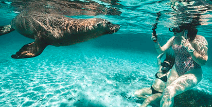
Where: 45-minute drive south of Perth in Shoalwater
Western Australia is renowned for its extraordinary marine life, and the waters surrounding Perth are a testament to that. The spectacular Shoalwater Bay is the gateway to the Islands Marine Park whose residents include over 200 bottlenose dolphins, rare sea lions and adorable little penguins. Meet them all on a family day out with Perth Wildlife Encounters eco-tour.
Get to know Australia's wildlife icons
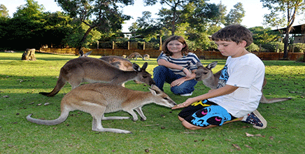
Where: 20 minutes north-east of the city
Caversham Wildlife Park makes for an exciting and educational day out. The park’s residents include around 200 species and more than 2,000 Australian animals, birds and reptiles, which you can meet through close-up encounters and viewings across the park. Conservation is at the heart of Caversham; they aim to increase the awareness of Australian animals to inspire further wildlife conservation across the country. Bring your kids here for the day and they’ll no doubt return with big smiles on their faces and a new appreciation for our incredible icons.
RELAXING TRIP
Dunsborough
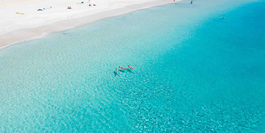
Just under 3 hours drive south of Perth is the cute seaside town of Dunsborough. This quaint little town that sits right on the waters of Geographe Bay is the perfect romantic weekend escape from the city.
You’ll find sensational beaches, delicious food and locally made wine, boutique shops, and the locals are so friendly. Dunsborough is a great destination for those couples who really want to relax on the beach and wine and dine for a few days.
Yallingup
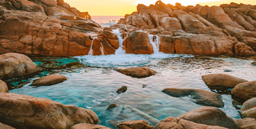
Three hours south of Perth is the small coastal town of Yallingup nestled into the hillside which is the perfect place for a couple’s weekend getaway from Perth. There are several great towns in the southwest region, and Yallingup is a perfect option for those wanting to be closer to the beach or in a quieter location.
Seashells Yallingup is the perfect place to stay for couples that are after some relaxation. The self-contained apartments come with a full kitchen and lounge area, and spa bath. Enjoy the sunset with a glass of wine in hand from your balcony overlooking Caves House gardens. Just a short drive away is Sugarloaf Rock, a great sunset spot located in the Leeuwin-Naturalise Park just north of Yallingup.
There are plenty of things to do in Yallingup. Start off your morning with a coffee from the Yallingup General store near Caves House. During the day, go underground at Ngilgi Cave, or explore the beautiful beaches. The sheltered lagoon at Yallingup Beach makes for a great swimming or snorkelling spot. From here, you can take a scenic walk along the Quenda trail that follows the coastline along part of the Cape-to-Cape track before reaching Smiths Beach.
Swan Valley: Full-Day Wine Tour with Lunch
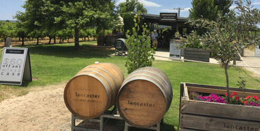
Enjoy a day in the Swan Valley sampling first class wines at 4 wineries, a delicious cheeseboard and a scrumptious lunch at a winery with a glass of wine included. Indulge in decadent chocolate liqueurs; and a beer sample at a micro brewery.
ADVENTUROUS TRIP
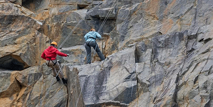
Abseiling
Enjoy an adrenaline filled day of abseiling in Mountain Quarry. Your tour company specialises in adventure activities based around roping and team building, catering to small groups with personalised and tailored service, delivered with excellence and professionalism.Want to try something different? For those that wish to add a little bit of extra excitement and try abseiling in the dark.
Rottnest Island Full-Day Bike and Ferry Trip
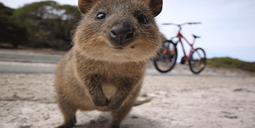
Experience the best of Rottnest Island on a half-day sightseeing tour by bus and historical train. Visit Kingstown Barracks, Oliver Hill Battery, and Henrietta Rocks shipwreck location, and keep an eye out for quokkas and other wildlife. You can snap photos of the turquoise bays and white-sand beaches that ring the traffic-free island, and learn about the history of the Aboriginal Noongar people. Half-day sightseeing bus tour of Rottnest Island Take in Oliver Hill Battery, Henrietta Rocks shipwreck location, and Kingstown Barracks Look for quokkas and other Australian native wildlife Includes live commentary from the guide, a light box lunch, and transportation
The Pinnacles Desert Sunset and Star-Gazing Tour
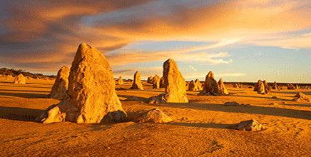
Enjoy a desert stargazing tour in the Pinnacles Desert
Spot native animals like emus and kangaroos in their natural habitat
Savor a glass of Margaret River wine as you watch the sunset
Hear stories from the Aboriginal Dreamtime as you gaze up at the night sky
See the rings of Saturn or Jupiter's moons through a powerful computerised telescope
ACCESSIBLE ENTERTAINMENT
Laugh Resort
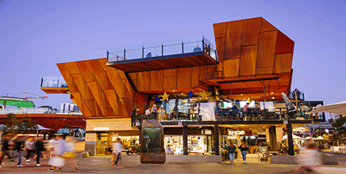
The Laugh Resort is a Comedy Club located at the Shoe Bar and Cafe in Yagan Square. Catch the train in to Perth city or park near Yagan Square. The Laugh Resort is an inclusive wheelchair accessible venue to enjoy a night out with lots of laughs. The lift takes you from ground level to first level where you will find The Shoe Bar and the room where The Laugh Resort is found. Be sure to let the Laugh Resort know you are coming and they will save a front row spot for you with a table for your drink. During intermission find the accessible bathroom clean and spacious. The Laugh Resort at The Shoe Bar and Cafe is the perfect night out for people in wheelchairs.
Palace Cinemas Raine Square
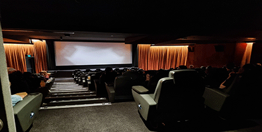
Take the train in to Perth City or find parking under ground at Raine Square with copious amounts of disabled parking for everyone. All you need to do is choose your movie and you let Palace Cinemas Raine Square do the rest. Choose the platinum experience and be spoilt by in cinema food and drinks. A disabled bathroom fitting for these cinemas is luxurious, spacious, well designed and clean. A fun night out for everyone inclusive of people in wheelchairs.
The Blue Room Theatre
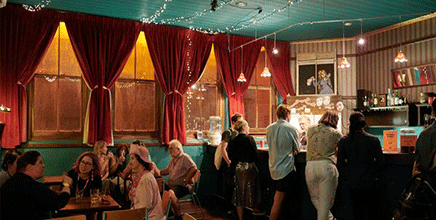
The Blue Room Theatre is located in the heart of Perth city and the Perth Cultural Centre. Use public transport in to Perth City or find Disabled parking in the City of Perth Car Park near The BlueRoom Theatre.Wheel inside a welcoming theatrical space be greeted by fabulous staff and be transformed by talented performers putting on an awesome show. A lift takes you up to the theatre where there is a bar to buy a drink before the show. Be seated front row the best seats in the house. Before or after the show at BlueRoom Theatre buy a pretzel and drink from the pink container that is Pretzel Perth. A fun accessible night out for everyone including people in wheelchairs.